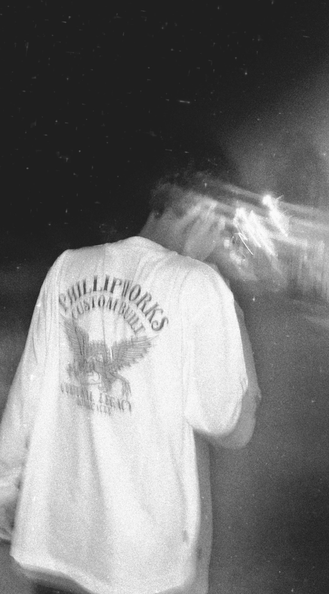

IN MOTION.PILIHAN STREETWEAR TERBARUJELAJAHIKOLEKSI ↗01 04
 KAMPANYE 02GAYA HARIAN.JELAJAHI PAKAIAN ↗
KAMPANYE 02GAYA HARIAN.JELAJAHI PAKAIAN ↗
 KAMPANYE 03LANGKAH BARU.JELAJAHI SEPATU ↗
KAMPANYE 03LANGKAH BARU.JELAJAHI SEPATU ↗
 KAMPANYE 04KUASAI MOMEN.LIHAT KOLEKSI ↗
KAMPANYE 04KUASAI MOMEN.LIHAT KOLEKSI ↗
01 — 04 / KAMPANYE DIPILIH
PILIHAN UNTUKMU
Pilihan unggulan.
Memuat produk pilihan…
 01 / SEPATUSEPATUJelajahi koleksi ↗
01 / SEPATUSEPATUJelajahi koleksi ↗
 02 / PAKAIANPAKAIANJelajahi koleksi ↗
02 / PAKAIANPAKAIANJelajahi koleksi ↗
 03 / AKSESORIAKSESORIJelajahi koleksi ↗
03 / AKSESORIAKSESORIJelajahi koleksi ↗


TENTANG K VÉNARI
Gaya adalah pilihan pribadi.
Jadikan ciri khasmu.
K VÉNARI menghadirkan pilihan streetwear, grafis ekspresif, dan sepatu dalam satu koleksi terkurasi. Jelajahi koleksi dan temukan gaya yang paling mewakilimu.
TEMUKAN PILIHANMU ↗